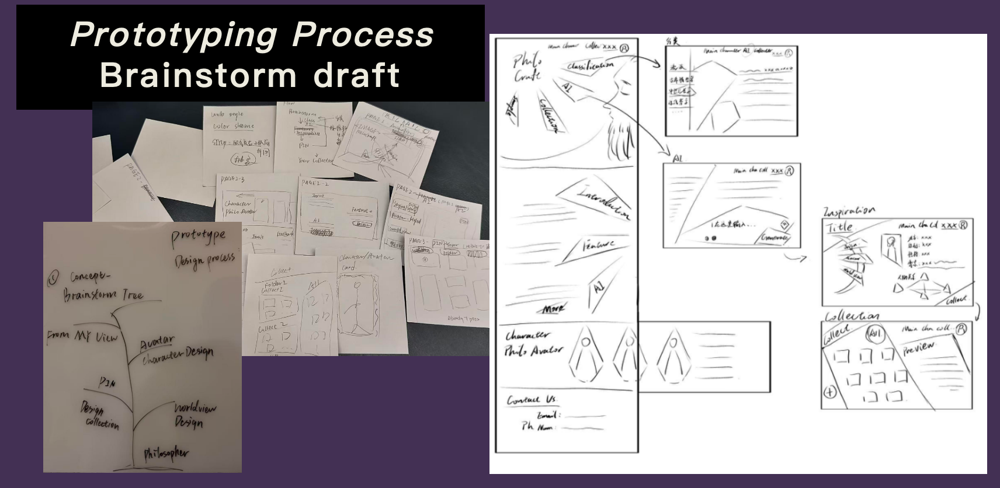
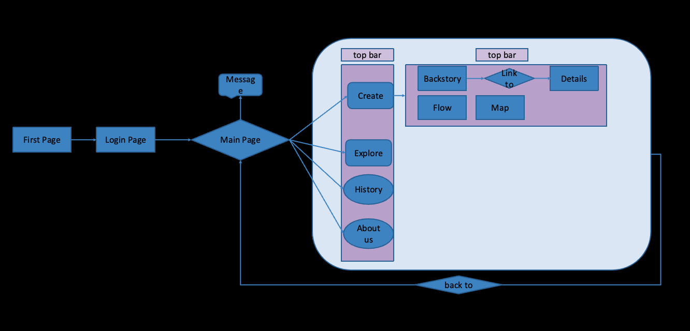

Main Projects / UI/UX
VOIDRAFT
A website interface and visual identity developed through Figma and web design studies.
01 / Overview
Design concept
VOIDRAFT is an interface design project exploring the visual direction, information layout and experience of a website. The existing materials document its concept and presentation.
02 / Design studies
Figma & web

Interface poster.

Website concept.
03 / Process
Design process & user flow
The process diagram records the development of the interface, while the user-flow graph maps navigation through the proposed website for indie game narrative designers.

